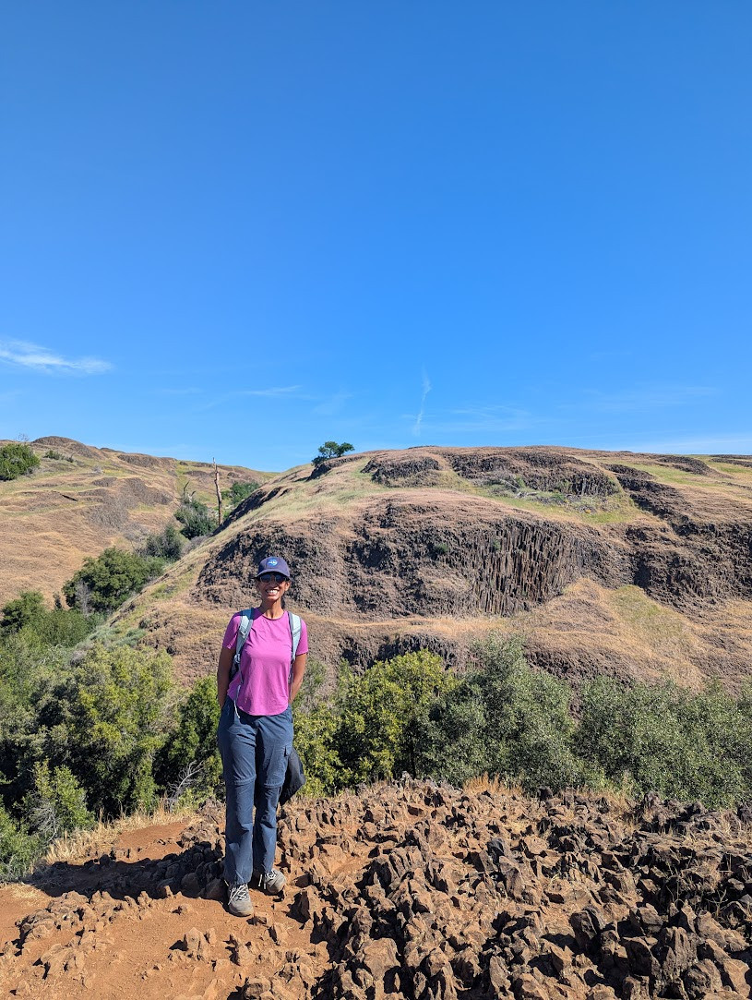
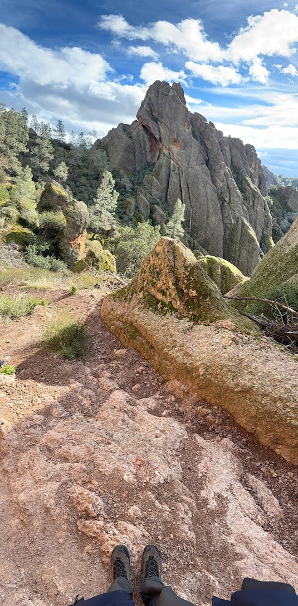
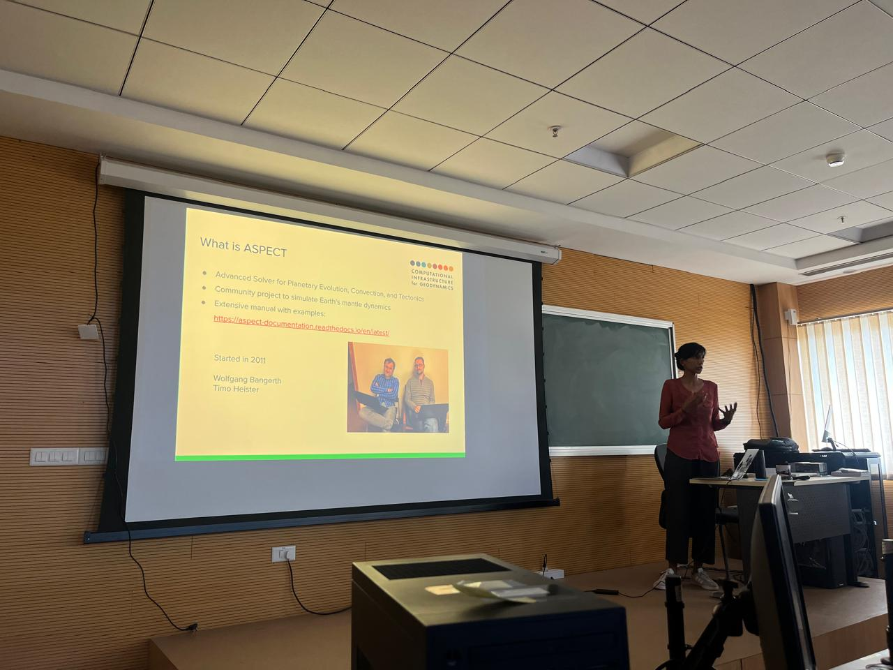

Current Position
Assistant Project Scientist
Computational Infrastructure for Geodynamics
University of California, Davis
Hello, I am Arushi!
I am a geophysicist interested in investigating the coupling between deeper mantle flow and observed surface tectonics. I study this interaction by developing global and regional-scale numerical models that combine all available geophysical constraints from surface topography to seismic tomography at the core-mantle boundary. I contribute and use community software, ASPECT and GeodynamicWorldBuilder, to simulate the physics in my models. You can find out more about my research projects here.
I am also interested in outreach projects that fosters community building. Towards this, I am developing educational modules based on open-source software to illustrate complex geodynamic concepts using interactive Jupyter notebooks.
When I am not struggling with segmentation "faults", I enjoy my time outdoors or experimenting with my bakes and crafts, or reading a good science-fiction book with a cup of tea!
- Presented a colloquium tak on "A numerical modeling perspective on how Earth’s surface deformation is controlled by underlying mantle dynamics" in the department of physics and astronomy at the Sacramento State University (Apr 2026)
- Led tutorials in ASPECT for the Geodynamics of the Indian plate using First-principle Tools (GIFT) workshop at the Indian Institute of Science Education and Research, Pune, India (Feb 2026)
- Presented our work on "Dynamics of Central and Eastern US: Interplay between Local and Far-Field Forces on Surface Deformation" at the AGU Fall Meeting (Dec 2025)
- Excited to join the ASPECT maintainer team (Oct 2025)
At Davis, I have been lucky to explore some beautiful geological sites. Here are some of the recent photos from the field!


